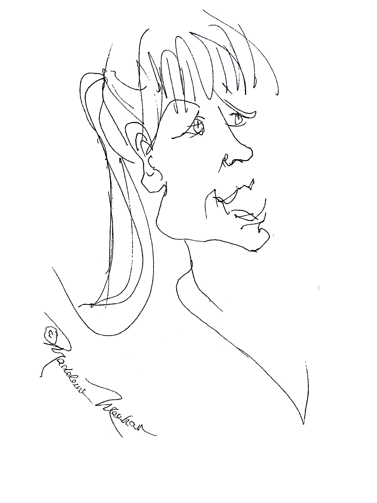

User Experience Design professional specializing in interaction design, information architecture and data visualization.
Eleven years ago I moved from Seattle to New York to pursue a life as a software-engineer-by-day and acting-student-at-the Stella Adler Studio of Acting-by-night.
After two years at the acting conservatory, I spent five years performing in a Off-Broadway show while still working as a software engineering in test. I transitioned to full-time UX four years ago.
I love teaching, coaching, and mentoring computer science students. Last school year, I mentored a Girls Who Code club and coached a Technovation Challenge high school team.
I currently teach computer science and user experience design at The Dalton School here in New York City.